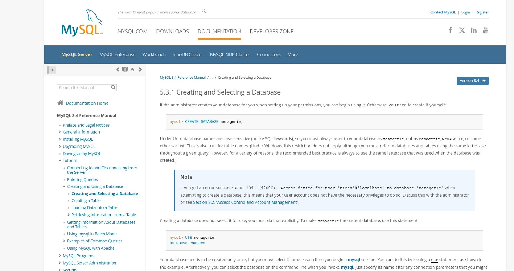

Fundamentals of Database Systems
Week 4 · Session 2
Creating Your First
DDL in action: BUILD your database from scratch
Student Edition - expanded lesson explanations
Fundamentals of Database Systems
01
Today's Goal
By End of Session, You'll Have:
A working "school_db" database with 3 tables
Tables with proper data types and constraints
Foreign key relationships between tables
Real data inserted into your tables
Your first SELECT queries returning results
Fundamentals of Database Systems
Part 01
MySQL Data Types
Choosing the right container for your data
Fundamentals of Database Systems
01
Why Types Matter
Data Types = Storage Rules
Every column needs a data type that tells MySQL what kind of values it will hold. The right type = better performance + better validation.
Good Type Choice
Age as INT (small number), GPA as DECIMAL(3,2) (precise), Name as VARCHAR(100) (flexible text)
Bad Type Choice
Age as TEXT (wastes space), GPA as VARCHAR (loses precision), Phone as INT (loses leading zeros)
Fundamentals of Database Systems
01
Numeric Types
Numeric Data Types
Type Range Use For
INT -2 billion to 2 billion IDs, counts, age SMALLINT -32,768 to 32,767 Small numbers (year, quantity) BIGINT Huge range Very large numbers DECIMAL(p,s) Exact precision Money, GPA (DECIMAL(3,2) = 1.75) FLOAT/DOUBLE Approximate Scientific calculations
Rule: Use INT for IDs, DECIMAL for money/grades, avoid FLOAT for precision.
Fundamentals of Database Systems
01
Text Types
Text/String Data Types
Type Max Length Use For
CHAR(n) Fixed n characters Fixed-length codes (gender: M/F, country: PH) VARCHAR(n) Variable, up to n Names, emails, addresses (most common) TEXT 65,535 characters Long text (descriptions, comments) ENUM('a','b','c') One of listed values Status, category (fixed options)
Rule: VARCHAR for most text. ENUM for fixed choices. TEXT only for long content.
Fundamentals of Database Systems
01
Date Types
Date & Time Data Types
Type Format Use For
DATE YYYY-MM-DD Birthdays, enrollment dates DATETIME YYYY-MM-DD HH:MM:SS Timestamps with specific time TIMESTAMP YYYY-MM-DD HH:MM:SS Auto-updated (created_at, updated_at) TIME HH:MM:SS Duration, schedule time YEAR YYYY Year only
Rule: DATE for dates, DATETIME for timestamps, TIMESTAMP for auto-tracking.
Fundamentals of Database Systems
01
Cheat Sheet
Common Column → Type Cheat Sheet
Column Best Type Why
student_id INT AUTO_INCREMENT Numeric, auto-generated name VARCHAR(100) Variable length text email VARCHAR(255) Emails can be long gpa DECIMAL(3,2) Exact: 1.00 to 5.00 phone VARCHAR(15) Preserves leading zeros, formatting birthday DATE Only need year-month-day status ENUM('Active','Inactive','Graduated') Fixed set of choices created_at TIMESTAMP DEFAULT CURRENT_TIMESTAMP Auto-records creation time
Fundamentals of Database Systems
Part 02
CREATE TABLE
Building your first tables
Fundamentals of Database Systems
02
Syntax
CREATE TABLE Syntax
CREATE TABLE table_name (datatype constraints,datatype constraints,datatype constraints,PRIMARY KEY (column1),FOREIGN KEY (columnX) REFERENCES other_table(column)ENGINE =InnoDB;
Fundamentals of Database Systems
02
Table 1
Let's Build: students Table
USE school_db;CREATE TABLE students (INT AUTO_INCREMENT ,VARCHAR (50) NOT NULL ,VARCHAR (50) NOT NULL ,VARCHAR (100) NOT NULL UNIQUE ,DATE ,ENUM ('BSIS' ,'BSIT' ,'BSCS' ) NOT NULL ,INT CHECK (year_level >= 1 AND year_level <= 5),DECIMAL (3,2) CHECK (gpa >= 1.00 AND gpa <= 5.00),ENUM ('Active' ,'Inactive' ,'Graduated' ) DEFAULT 'Active' ,TIMESTAMP DEFAULT CURRENT_TIMESTAMP ,PRIMARY KEY (student_id)ENGINE =InnoDB;
Fundamentals of Database Systems
02
Table 2
Let's Build: courses Table
CREATE TABLE courses (VARCHAR (10),VARCHAR (100) NOT NULL ,INT NOT NULL CHECK (units >= 1 AND units <= 6),TEXT ,ENUM ('1st' ,'2nd' ,'Summer' ) NOT NULL ,PRIMARY KEY (course_code)ENGINE =InnoDB;
Note: course_code is a NATURAL key (VARCHAR), not auto-increment. It's meaningful.
Fundamentals of Database Systems
02
Table 3
Let's Build: enrollments Table
CREATE TABLE enrollments (INT AUTO_INCREMENT ,INT NOT NULL ,VARCHAR (10) NOT NULL ,VARCHAR (9) NOT NULL , DECIMAL (3,2),TIMESTAMP DEFAULT CURRENT_TIMESTAMP ,PRIMARY KEY (enroll_id),FOREIGN KEY (student_id) REFERENCES students(student_id)ON DELETE CASCADE ,FOREIGN KEY (course_code) REFERENCES courses(course_code)ON DELETE RESTRICT ENGINE =InnoDB;
Fundamentals of Database Systems
02
Verify
Verify Your Tables
SHOW TABLES ;DESCRIBE students;SHOW CREATE TABLE students;
DESCRIBE shows columns, types, and constraints. Use it to verify your work!
Fundamentals of Database Systems
Part 03
INSERT Data
Populating your tables with records
Fundamentals of Database Systems
03
INSERT Syntax
INSERT INTO Syntax
INSERT INTO table_name (col1, col2, col3)VALUES (val1, val2, val3);INSERT INTO table_nameVALUES (val1, val2, val3, ...);INSERT INTO table_name (col1, col2)VALUES (v1, v2), (v3, v4), (v5, v6);
Fundamentals of Database Systems
03
Insert Courses
Inserting Course Data
INSERT INTO courses (course_code, course_name, units, description, semester)VALUES 'DB101' , 'Fundamentals of Database Systems' , 3, 'Introduction to databases and SQL' , '1st' ),'WEB201' , 'Web Development' , 3, 'HTML, CSS, JavaScript, PHP' , '1st' ),'OOP101' , 'Object-Oriented Programming' , 3, 'Java/Python OOP concepts' , '2nd' ),'NET301' , 'Computer Networks' , 3, 'Network fundamentals' , '2nd' ),'SYS401' , 'Systems Analysis & Design' , 3, 'SDLC and system design' , '1st' );
Fundamentals of Database Systems
03
Insert Students
Inserting Student Data
INSERT INTO students (first_name, last_name, email, date_of_birth, course, year_level, gpa)VALUES 'Maria' , 'Santos' , 'maria.santos@school.edu' , '2003-05-15' , 'BSIS' , 2, 1.50),'Juan' , 'Cruz' , 'juan.cruz@school.edu' , '2002-11-22' , 'BSIT' , 3, 1.75),'Ana' , 'Reyes' , 'ana.reyes@school.edu' , '2004-01-08' , 'BSIS' , 1, 1.25),'Pedro' , 'Garcia' , 'pedro.garcia@school.edu' , '2003-07-30' , 'BSCS' , 2, 2.00),'Lisa' , 'Mendoza' , 'lisa.mendoza@school.edu' , '2002-09-14' , 'BSIT' , 4, 1.50);
Fundamentals of Database Systems
03
Insert Enrollments
Inserting Enrollment Data
INSERT INTO enrollments (student_id, course_code, school_year, grade)VALUES 'DB101' , '2024-2025' , 1.50),'WEB201' , '2024-2025' , 1.75),'DB101' , '2024-2025' , 2.00),'OOP101' , '2024-2025' , 1.50),'DB101' , '2024-2025' , NULL ),'WEB201' , '2024-2025' , 2.25),'NET301' , '2024-2025' , 1.75);
Note: Ana's grade is NULL (hasn't taken the exam yet). That's valid!
Fundamentals of Database Systems
Part 04
SELECT Queries
Reading your data back
Fundamentals of Database Systems
04
Basic SELECT
Your First SELECT Queries
SELECT * FROM students;SELECT * FROM courses;SELECT * FROM enrollments;SELECT COUNT (*) AS total_students FROM students;
Fundamentals of Database Systems
04
Specific Columns
SELECT Specific Columns
SELECT first_name, last_name, course FROM students;SELECT course_code, course_name FROM courses;SELECT first_name AS "First Name" ,AS "Grade Point Average" FROM students;
Fundamentals of Database Systems
04
WHERE Clause
Filtering with WHERE
SELECT * FROM students WHERE course = 'BSIS' ;SELECT * FROM students WHERE gpa < 1.50;SELECT * FROM students WHERE year_level >= 2;SELECT * FROM studentsWHERE course = 'BSIS' AND gpa <= 1.50;
Fundamentals of Database Systems
04
Sorting
ORDER BY (Sorting Results)
SELECT * FROM students ORDER BY gpa ASC ;SELECT * FROM students ORDER BY last_name ASC ;SELECT * FROM studentsORDER BY year_level DESC , gpa ASC ;
ASC = ascending (A-Z, 1-9). DESC = descending (Z-A, 9-1).
Fundamentals of Database Systems
04
Answer
Solution
SELECT first_name, last_name, gpaFROM studentsWHERE course = 'BSIT' ORDER BY gpa ASC ;
Expected result: Lisa (1.50) then Juan (1.75). Both BSIT, sorted by GPA ascending.
Fundamentals of Database Systems
04
Testing Constraints
Let's Break Things! (Testing Constraints)
INSERT INTO students (first_name, last_name, email, course, year_level)VALUES ('Test' , 'User' , 'maria.santos@school.edu' , 'BSIS' , 1);INSERT INTO students (first_name, last_name, email, course, year_level, gpa)VALUES ('Bad' , 'Data' , 'bad@test.com' , 'BSIS' , 1, 10.00);INSERT INTO enrollments (student_id, course_code, school_year)VALUES (999, 'FAKE101' , '2024-2025' );
Fundamentals of Database Systems
04
Recap
Session Recap
✅ Learned MySQL data types (INT, VARCHAR, DATE, DECIMAL, ENUM)
✅ Created 3 tables with proper constraints
✅ Inserted sample data (courses → students → enrollments)
✅ Wrote SELECT queries with WHERE and ORDER BY
✅ Tested constraints by intentionally violating them
Fundamentals of Database Systems
04
Next Week
Week 5: SQL Basics Deep Dive
Next sessions cover:
More CREATE TABLE patterns and ALTER TABLE
INSERT with edge cases and batch inserts
SELECT with advanced WHERE (LIKE, IN, BETWEEN, IS NULL)
LIMIT and pagination
Fundamentals of Database Systems Concept Model How Creating Your First Database & Tables fits together Database A named container for related tables and other objects.
Table definition Columns, types, defaults, keys, and constraints expressed as schema.
Row One valid instance inserted under that definition.
Fundamentals of Database Systems System View Trace the logic from start to finish Create database
Select database
Create table
Insert and inspect rows
Common failure Choosing types only by sample values creates columns that reject future valid data or allow invalid data.
Better approach Choose types and constraints from the full business meaning and expected range.
Fundamentals of Database Systems Official Reference Creating and selecting a database What to notice Database: A named container for related tables and other objects.Table definition: Columns, types, defaults, keys, and constraints expressed as schema.Row: One valid instance inserted under that definition.Use the labels, syntax, and navigation shown here to connect the lesson to the actual database tool or documentation.

MySQL Documentation · Creating and selecting a database
Fundamentals of Database Systems
You Built a
Week 4 · Session 2 Complete
×